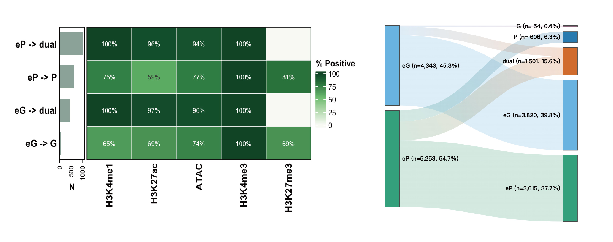

An integrative suite for target assignment and functional annotation of chromatin interactions.


Introduction
Welcome to looplook, a versatile R/Bioconductor toolkit developed to integrate 3D chromatin architecture data (e.g., HiChIP, ChIA-PET, Hi-C) with other tabular omics datasets, including transcriptomics, chromatin accessibility, protein-DNA interactions (derived from ChIP-seq, CUT&Tag, or CUT&RUN), and genetic variants annotated by genome-wide association studies.
Numerous studies have demonstrated that many distal regulatory elements physically interact with target gene promoters via 3D chromatin loopings, thereby regulating the expression of genes located tens of kilobases to megabases away in the linear genome. However, conventional annotations tend to assign putative elements (peaks) to their nearest genes in cis, which often fails to reflect biological reality. Hence, the accurate assignment of non-coding genetic variants or orphan peaks to their cognate target genes remains a major bottleneck in the target annotation of functional elements. To address this, looplook systematically prioritizes physical spatial chromatin contacts to batch-annotate thousands of regulatory elements at a genome-wide, high-throughput scale, thereby identifying their candidate target genes with high confidence and systematic efficiency.
Beyond its utility as a tool for integrative target annotation, looplook can be used as a standalone utility for loop analysis per se. Even in the absence of auxiliary omics data, it systematically annotates the 3D chromatin interactome itself, classifying complex spatial topologies (e.g., Enhancer-Promoter, Promoter-Promoter interactions) and quantifying node connectivity to uncover dense regulatory hubs and enhancer cliques that may represent candidate regulatory domains driving cell-type-specific transcriptional programs.
A Triple-Layer Annotation Framework
looplook’s core methodological contribution is a three-layer orthogonal annotation framework that classifies each loop anchor — the fundamental unit connecting 3D contacts to downstream peak and feature annotation — by integrating independent categories of experimental evidence:
- Genomic annotation provides the baseline anchor assignment from genomic coordinates.
- Expression-aware refinement adds transcriptional-activity context.
- Chromatin-Aware Refinement supplies orthogonal histone-mark validation.
These anchor-level classifications propagate through the loop network to determine target-gene assignments for every auxiliary feature (ChIP-seq peaks, ATAC-seq regions, GWAS variants). Because the layers function independently, users may deploy any subset matched to their available data modalities — a single layer for exploratory annotation, two for partial orthogonal support, or all three for maximally resolved regulatory-element classification.
┌───────────────────────────┐
│ GENOMIC ANNOTATION │
│ Genomic coordinates │
│ (TSS/gene-body overlap) │
│ │
│ "Where is it?" │
│ → P / G / E │
└─────────┬─────┬───────────┘
│ │
┌────────────┘ └───────────┐
▼ ▼
┌──────────────────────────┐ ┌───────────────────────────┐
│ EXPRESSION REFINEMENT │ │CHROMATIN RECLASSIFICATION │
│ Transcriptomic data │ │ Chromatin state │
│ (CAGE-seq, RNA-seq, │ │ (ChIP-seq, CUT&Tag, │
│ TT-seq, SLAM-seq) │──────▶│ ATAC-seq) │
│ │ │ │
│ "Is it active?" │ │ "What is it?" │
│ → eP / eG (silenced) │ │ → dual / P / E corrected │
└──────────┬───────────────┘ └──────────┬────────────────┘
│ │
└────────────────┬─────────────────┘
│
Three layers = one integrated workflow
each adds orthogonal evidence; must follow annotation
→ expression → chromatin order when combinedInstallation
looplook extensively leverages the Bioconductor ecosystem for robust genomic arithmetic and annotation. To ensure optimal compatibility, please ensure your system environment is fully up to date prior to installation:
# Installation from GitHub
if (!requireNamespace("BiocManager", quietly = TRUE)) install.packages("BiocManager")
BiocManager::install("zying106/looplook")Detailed Workflow & Core Modules
Module 1: Data Consolidation & Preprocessing
In 3D genomics analyses, individual replicates typically exhibit certain degrees of inconsistency or noise. The consolidate_chromatin_loops function serves as the foundational data-cleaning module, merging multiple replicates into a standardized, unified 3D chromatin interaction coordinate framework.
Key Parameters:
-
mode: Defines the overarching merging algorithm. The"consensus"mode (recommended) employs graph-based connected component analysis to cluster nearby chromatin loop anchors across biological/technical samples. The"intersect"mode applies strict reference-based filtering to retain only overlapping interactions, while the"union"mode retains all detected interactions for exploratory pan-tissue analyses. -
min_raw_score&min_score(The Dual-Filter):min_raw_scoreacts as a pre-filter applied to individual BEDPE files before clustering (e.g., removing singleton noise to help reduce computational memory overhead).min_scoreserves as a post-filter applied to the final merged chromatin interactome to improve confidence. In"consensus"and"union"modes, the representative score is replicate-balanced: the package first averages clustered loop scores within each replicate, then averages across replicates, so one replicate with denser loop calls does not dominate the final score. -
gap: Defines the maximum spatial distance (in base pairs) allowed between loop anchors for consideration as part of the same physical cluster. -
chaining_policy: Controls how transitive chaining (A-B and B-C merging A-C into the same cluster) is handled."warn"(default): emits a warning when any cluster span exceeds the chaining threshold; does not remove affected clusters."none": silent chaining allowed."drop": excludes wide chained clusters from output."error": stops with an error. -
blacklist_species: Automatically excludes chromatin loops overlapping with high-variance, artifact-prone genomic regions (e.g., centromeres, telomeres) by integrating the official ENCODE blacklist for specified species (e.g.,"hg38","mm10"). -
region_of_interest: Accepts an auxiliary BED file (e.g., a specific disease-associated locus or ChIP-seq peak set) to filter for loops with physical connectivity to the target genomic region.
library(looplook)
out_dir <- tempdir()
f1 <- system.file("extdata", "example_loops_1.bedpe", package = "looplook")
f2 <- system.file("extdata", "example_loops_2.bedpe", package = "looplook")
consensus_global <- consolidate_chromatin_loops(
files = c(f1, f2),
mode = "consensus",
gap = 1000,
out_file = file.path(out_dir, "consensus_loops.bedpe"),
write_output = TRUE,
quiet = TRUE
)Module 2: 3D-Guided Peak Annotation & Mapping
This module serves as the core target mapping engine. It resolves locus assignment conflicts through a rigorous hierarchical pipeline: Functional Biotype Prioritization → Expression Filtering (within selected tier) → Co-Dominant Expression Tiebreaker (retains all genes with expression at least 10% of the group maximum (within a 10-fold range)). The biotype priority order can be customised via the biotype_order parameter (five keywords: protein, small_ncRNA, antisense, lncRNA, pseudogene). For advanced control, resolve_gene_conflicts() exposes the full conflict-resolution logic as a standalone function.
Key Parameters:
-
target_bed: Specifies the auxiliary genomic features of interest (e.g., GWAS SNPs, ATAC-seq peaks, or transcription factor binding sites) that require spatial target gene assignment. -
expr_matrix_file&sample_columns: Providing an RNA-seq matrix allows the engine to activate the Expression Pre-filter and Tiebreaker logic, drastically reducing false-positive gene assignments in genomic regions harboring multiple genes. -
biotype_order: Custom ordering of biotype categories for conflict resolution. Default:c("protein", "small_ncRNA", "antisense", "lncRNA", "pseudogene"). Setc("lncRNA", "protein")to prioritise lncRNAs. -
neighbor_hop: An advanced topological parameter for 3D chromatin interactome network traversal. Target gene assignment usesneighbor_hop + 1graph steps to capture genes at opposite anchors.0(default) restricts to direct contacts (target genes within 1-hop).1additionally includes 2-hop expanded targets for exploratory network analysis. Values greater than1are not supported. -
hub_metric: Which connectivity count to use for hub detection."unique_contacts"(default): counts distinct neighbour anchor IDs, robust to duplicate/replicate loop rows."total_loops": counts all loop rows (backward compatible; may inflate hub calls with unconsolidated replicates). -
target_priority: Policy for prioritising multiple candidate target genes per feature. Applies only within primary target links (defaultpath_length <= 1); longer paths are reported separately asExpanded_Target_Genesand do not compete forAssigned_Target_Genes."promoter_then_distance"(default): within primary links, promoter-linked genes beat gene-body genes, with shorter paths breaking ties."distance_then_role": path-length dominates — the closest linked gene wins; at equal distance, promoter beats gene-body (legacy behaviour). -
tss_region: Defines the spatial boundary of gene promoters relative to the Transcription Start Site (TSS).
# Annotate chromatin loops and map features to target genes via 3D contacts
# When TxDb/OrgDb are installed, runs the full pipeline; otherwise loads pre-computed result
if (requireNamespace("TxDb.Hsapiens.UCSC.hg38.knownGene", quietly = TRUE) &&
requireNamespace("org.Hs.eg.db", quietly = TRUE)) {
bedpe_file <- system.file("extdata", "example_loops_1.bedpe", package = "looplook")
atac_path <- system.file("extdata", "example_peaks.bed", package = "looplook")
expr_path <- system.file("extdata", "example_tpm.txt", package = "looplook")
res_integrated <- annotate_peaks_and_loops(
bedpe_file = bedpe_file, # Chromatin loops (BEDPE)
target_bed = atac_path, # Genomic features to map
expr_matrix_file = expr_path, # RNA-seq expression matrix
sample_columns = c("con1", "con2"), # Samples for baseline expression
species = "hg38",
neighbor_hop = 0, # Direct contacts only
hub_percentile = 0.95, # Top 5% as regulatory hubs
out_dir = out_dir,
project_name = "HiChIP_Integrative",
quiet = TRUE
)
} else {
tmp <- new.env()
load(system.file("extdata", "analysis_results.RData", package = "looplook"), envir = tmp)
res_integrated <- tmp[[ls(tmp)[1]]]
}Output Data Dictionary: The Comprehensive 3D Spatial Catalog
The module exports a multi-layered tabular catalog (e.g., *_Basic_Results.xlsx) detailing the spatial interactome:
Integrative Target Mapping (
target_annotation) Delineates the spatial coverage of genomic variants/features inputted by the user. It separates strict loop-derived columns (Regulated_promoter_genes,Assigned_Target_Genes) from*_Filledfallback columns, and records provenance throughRegulated_promoter_Evidence,Regulated_promoter_Fallback_Evidence, and the long-formattarget_gene_linkstable. This keeps promoter-supported loop targets, historical assigned targets, and nearest-gene fallback choices traceable rather than conflated.3D Network Architecture (
loop_annotation) Resolves the biological syntax of the structural interactome. It classifies topological interactions (loop_type, e.g., E-P, P-P) and distinguishes biologically relevantPutative_Target_Genesfrom the broader, raw physical interaction footprints (All_Anchor_Genes).Topological Hub Detection Quantifies structural node degrees (e.g.,
n_Linked_Promoters,n_Linked_Distal) to deconstruct the 3D interactome from two complementary perspectives:promoter_centric_stats: Identifies core target genes regulated by complex regulatory architectures (e.g., enhancer arrays or transcription factories), whiledistal_element_statshighlights high-connectivity non-coding regions to facilitate the discovery of putative enhancer cliques.

Figure 1: Representative outputs of 3D-Guided Annotation. This composite plot displays a curated subset of the automated profiling suite, featuring macro-scale chromosomal ideograms and topological overlap analysis of the annotated 3D interactome.
Module 3A: Expression-Aware Refinement
Physical proximity is a structural prerequisite, but not a direct proxy for active transcriptional regulation. This module integrates quantitative transcriptome data to annotate each loop with expression-aware functional status. All structural loops are preserved; the pipeline reclassifies silent anchors (P to eP, G to eG), flags which loops belong to the expression-supported functional subset (Retained_In_Functional_Network), and exposes Refinement_Action for transparent interpretation.
Key Parameters:
-
threshold&unit_type: Defines the quantitative expression cutoff (e.g.,threshold = 1.0,unit_type = "TPM"); genes with expression >=thresholdare considered active. -
threshold_mode(new):"absolute"(default):thresholdis a direct expression cutoff."quantile":thresholdis a quantile of the expression distribution (e.g.,0.75selects the top 25% most highly expressed genes), adapting to different sequencing depths. -
reclassify_by_expression: When enabled (TRUE), transcriptionally silent promoters are not simply discarded; instead, they are biologically reclassified to enhancer-like regulatory elements. This correction refines the regulatory topology (e.g., reclassifying a functionally silent P-P loop into a curated eP-P loop). Important:eP/eGlabels indicate transcriptional silence, not functional enhancer activity. Orthogonal chromatin data are required for functional interpretation.
expr_path <- system.file("extdata", "example_tpm.txt", package = "looplook")
refined_res <- refine_loop_anchors_by_expression(
annotation_res = res_integrated,
expr_matrix_file = expr_path,
sample_columns = c("con1", "con2"),
threshold = 1,
unit_type = "TPM",
reclassify_by_expression = TRUE,
out_dir = out_dir,
project_name = "Refined_Network",
quiet = TRUE
)Output Data Dictionary: The Functionally Active Regulome Following transcriptome integration, the refined tabular outputs represent an expression-supported, functionally active subset of the initial 3D chromatin interactome. The key features of these output are as follows:
-
Expression-Aware Refinement: All structural loops are preserved. The pipeline annotates each loop with expression-aware functional status (
Has_Active_Target,Retained_In_Functional_Network,Refinement_Action) and provides an expression-supported functional subset for downstream analysis, without discarding structural evidence. -
Dynamic Topological Reclassification: The topological annotations within the
loop_typeare biologically recalibrated. By dynamically reclassifying transcriptionally silent promoters (P) as enhancer-like elements (eP), the catalog fundamentally corrects the spatial regulatory syntax (e.g., transforming a silent P-P loop into an eP-P interaction axis). -
Filtered Target Gene Links: The refined provenance sheet retains only peak-gene links still used by the refined target columns and appends
Mean_ExpressionplusPasses_Expression_Filter, so inactive Basic-stage links are not carried forward as active refined evidence.
The eP and eG labels denote expression-inactive promoter- or gene-body-associated anchors treated as distal-like regulatory anchors for network syntax. These should not be interpreted as experimentally validated enhancers without additional epigenomic evidence (e.g., ATAC-seq accessibility, H3K27ac enrichment).

Figure 2: Representative outputs of Expression-Aware Refinement. As shown by the Multi-Omics Sankey Tracking, this curated visualization dynamically traces the fate of peak through 3D chromatin topological interactions to their corresponding transcriptionally active target genes.
Module 3B: Chromatin-Aware Refinement
While expression data identify transcriptionally active anchors, orthogonal chromatin marks (ChIP-seq, CUT&Tag, ATAC-seq) provide orthogonal chromatin-state evidence of regulatory element identity. Module 3B offers two complementary functions for chromatin-based anchor validation:
validate_epeG_by_chromatin() — Tests eP/eG (or P/G/E) anchors against user-supplied chromatin mark BED files. Each anchor is scored against ENCODE-inspired active-enhancer criteria: canonical (H3K4me1+, H3K27ac+, ATAC+, H3K4me3-, H3K27me3-), strong, supported, limited, or uncertain.
refine_loop_anchors_by_chromatin() — Applies chromatin-mark evidence to reclassify anchors and update loop topologies. H3K4me3-positive anchors default to P or G; dual-signature elements are identified when bigWig evidence supports H3K4me1 dominance (H3K4me1/H3K4me3 ≥ 3 via chromatin_bw) or overlap with a curated enhancer BED (enhancer_bed). Also supports: P + enhancer marks → E; eP/eG + promoter marks → P (H3K4me3+ inside a gene body → alternate TSS); E + H3K4me3 only → P (unannotated promoter). Supports recompute_targets = TRUE to rebuild target gene links with updated anchor types, producing chromatin-aware target_annotation and target_gene_links.
# Validate eP/eG anchors against chromatin marks (uses the packaged example
# chromatin BED files; replace with your own ChIP-seq/CUT&Tag/ATAC-seq files)
val <- validate_epeG_by_chromatin(
annotation_res = refined_res,
chromatin_beds = list(
H3K4me1 = system.file("extdata", "example_h3k4me1_peaks.bed", package = "looplook"),
H3K27ac = system.file("extdata", "example_k27ac_peaks.bed", package = "looplook"),
ATAC = system.file("extdata", "example_peaks.bed", package = "looplook")
)
)
table(val$enhancer_evidence)
# Chromatin-aware reclassification with target link recomputation
cr <- refine_loop_anchors_by_chromatin(
annotation_res = refined_res,
chromatin_beds = list(
H3K4me1 = system.file("extdata", "example_h3k4me1_peaks.bed", package = "looplook"),
H3K4me3 = system.file("extdata", "example_h3k4me3_peaks.bed", package = "looplook"),
H3K27ac = system.file("extdata", "example_k27ac_peaks.bed", package = "looplook")
),
recompute_targets = TRUE
)
table(cr$loop_annotation$loop_type)##
## E-E E-eG E-eP E-G E-P eG-eG eG-eP eG-G eG-P eP-eP eP-G eP-P G-G
## 4 3 3 13 26 12 5 11 21 1 8 27 13
## G-P P-P
## 73 80
Figure 4: Chromatin-Aware Refinement outputs. Right: Sankey flow diagram tracing each anchor’s reclassification path (Before → After) with colourblind-safe Wong palette. Left: aggregated heatmap showing the percentage of anchors in each reclassification group positive for each chromatin mark (green = present, lighter = lower enrichment).
Module 4: Automated Functional Profiling
This module provides a fully automated, end-to-end multi-omics analysis pipeline that integrates 3D genomic interactions with transcriptomic data to unveil the regulatory mechanisms of targets of interest.
Key Parameters:
-
target_source(The Biological Scope) Defines the biological scope of functional profiling.-
"targets": Focuses exclusively on the putative target genes regulated by inputted genomic features (Peak-Centric mode). -
"loops": Evaluates the entire 3D interactome independently of the inputted genomic features (Global Network-Centric mode).
-
-
target_mapping_modeControls the stringency of 3D target assignment."all"accepts broad 3D target regulation, while"promoter"is highly stringent, requiring 3D loops to explicitly anchor at canonical promoter regions, excluding distal E-G connections. -
include_Filled(The Stringency Toggle) Adjusts the stringency of annotation integration.-
TRUE(Hybrid Mode): Utilizes the comprehensively merged annotation, prioritizing 3D loop-derived target genes while rescuing unlooped genomic elements by assigning them to their nearest linear genes. -
FALSE(Pure Spatial Mode): Strictly isolates and analyzes only the 3D interactome.
-
-
use_nearest_gene(The Control) Serves as a classical baseline reference. If set toTRUE, the engine bypasses 3D spatial topology and strictly assigns genomic features to their nearest linear genes, facilitating a direct comparison to demonstrate the novel functional insights gained from 3D-guided mapping.
diff_path <- system.file("extdata", "example_deg.txt", package = "looplook")
meta_path <- system.file("extdata", "example_coldata.txt", package = "looplook")
res_profile <- profile_target_genes(
annotation_res = refined_res,
diff_file = diff_path,
lfc_col = "log2FoldChange",
expr_matrix_file = expr_path,
metadata_file = meta_path,
target_source = c("loops", "targets"),
target_mapping_mode = "all",
include_Filled = TRUE,
use_nearest_gene = FALSE,
project_name = "Functional_Profiling",
run_motif = FALSE,
run_go = FALSE,
run_ppi = FALSE
)
Figure 3: Representative outputs of Functional Profiling. This curated composite highlights Divergent Concept Networks and Asymmetric Motif Signatures, offering a partial glimpse into the downstream visualizations that decode the trans-regulatory logic of the spatial hubs.
Module 5: IGV-Style Track Visualization
This module precisely renders the local 3D chromatin spatial interactome through a multi-tiered genomic browser-style visualization interface, similar to the layout of the Integrative Genomics Viewer (IGV).
Key Parameters:
-
score_to_alphaLogical parameter. IfTRUE, it maps quantitative chromatin interaction scores to the alpha (transparency) channel of the Bezier arcs, enabling visual differentiation of interaction strength. -
speciesSpecifies the organism of interest, directing the function to automatically load the correspondingTxDbandOrgDbBioconductor packages. This ensures precise rendering of gene tracks, including exon-intron structures and strand directionality.
bedpe_path <- system.file("extdata", "example_loops_1.bedpe", package = "looplook")
bed_path <- system.file("extdata", "example_peaks.bed", package = "looplook")
track_plot <- plot_peaks_interactions(
bedpe_file = bedpe_path,
target_bed = bed_path,
chr = "chr1",
from = 11884299,
to = 12106581,
species = "hg38"
)
Figure 5: Integrative genomic browser view displaying 3D chromatin loops, genomic regions, and directional gene models.
One-Click Parameterised Report
To facilitate intuitive data exploration and result interpretation, an integrated HTML report can be compiled to encapsulate the complete analytical workflow (annotation, refinement, and profiling), presenting the outputs in a structured and accessible format.
# One-click report (renders a standalone HTML via nested rmarkdown)
looplook::looplook_report(
bedpe_file = system.file("extdata", "example_loops_1.bedpe", package = "looplook"),
target_bed = system.file("extdata", "example_peaks.bed", package = "looplook"),
expr_matrix_file = system.file("extdata", "example_tpm.txt", package = "looplook"),
diff_file = system.file("extdata", "example_deg.txt", package = "looplook"),
metadata_file = system.file("extdata", "example_coldata.txt", package = "looplook"),
project_name = "My HiChIP Study"
)The report is also available from the RStudio menu: File → New File → R Markdown → From Template → looplook Report.
Contact
Ying ZHANG Zhejiang University Email: 12207129@zju.edu.cn
For bug reports, feature requests, or questions regarding the package, please open an issue at the looplook GitHub repository.
Resources
- Package website: https://zying106.github.io/looplook/ — full documentation, function reference, and vignettes
- Preprint: bioRxiv 10.64898/2026.04.03.715516 — package manuscript and benchmarks
Citation
If you use looplook in your research, please cite the preprint:
Zhang Y, Huang X, Chen Y, Xu L (2026). “looplook: An integrative suite for expression-aware target assignment and functional annotation of chromatin interactions.” bioRxiv. doi:10.64898/2026.04.03.715516 https://doi.org/10.64898/2026.04.03.715516.
The citation above is generated programmatically from inst/CITATION via citation("looplook"), which verifies that the CITATION file parses correctly and keeps the README citation in sync with the package.
Preprint: bioRxiv 10.64898/2026.04.03.715516
Session Information
For reproducibility, looplook is developed and tested under the following environment:
## ─ Session info ───────────────────────────────────────────────────────────────
## setting value
## version R version 4.5.1 (2025-06-13)
## os macOS Sequoia 15.3
## system aarch64, darwin20
## ui X11
## language (EN)
## collate en_US.UTF-8
## ctype en_US.UTF-8
## tz Asia/Singapore
## date 2026-08-10
## pandoc 3.9.0.2 @ /opt/homebrew/bin/ (via rmarkdown)
## quarto NA
##
## ─ Packages ───────────────────────────────────────────────────────────────────
## package * version date (UTC) lib source
## abind 1.4-8 2024-09-12 [1] CRAN (R 4.5.0)
## AnnotationDbi * 1.72.0 2025-10-29 [1] https://bioc-release.r-universe.dev (R 4.5.2)
## AnnotationFilter 1.34.0 2025-10-29 [1] https://bioc-release.r-universe.dev (R 4.5.2)
## ape 5.8-1 2024-12-16 [1] CRAN (R 4.5.0)
## aplot 0.3.1 2026-07-07 [1] CRAN (R 4.5.2)
## backports 1.5.1 2026-04-03 [1] CRAN (R 4.5.2)
## bamsignals 1.42.0 2025-10-29 [1] Bioconductor 3.22 (R 4.5.1)
## base64enc 0.1-6 2026-02-02 [1] CRAN (R 4.5.2)
## bezier 1.1.2 2018-12-14 [1] CRAN (R 4.5.0)
## Biobase * 2.70.0 2025-10-29 [1] https://bioc-release.r-universe.dev (R 4.5.3)
## BiocGenerics * 0.56.0 2025-10-29 [1] https://bioc-release.r-universe.dev (R 4.5.2)
## BiocIO 1.20.0 2025-10-29 [1] https://bioc-release.r-universe.dev (R 4.5.2)
## BiocParallel 1.44.0 2025-10-29 [1] Bioconductor 3.22 (R 4.5.1)
## Biostrings 2.78.0 2025-10-29 [1] https://bioc-release.r-universe.dev (R 4.5.2)
## biovizBase 1.58.0 2025-10-29 [1] https://bioc-release.r-universe.dev (R 4.5.2)
## bit 4.6.0 2025-03-06 [1] CRAN (R 4.5.0)
## bit64 4.8.2 2026-05-19 [1] CRAN (R 4.5.2)
## bitops 1.0-9 2024-10-03 [1] CRAN (R 4.5.0)
## blob 1.3.0 2026-01-14 [1] CRAN (R 4.5.2)
## boot 1.3-31 2024-08-28 [1] CRAN (R 4.5.1)
## broom 1.0.11 2025-12-04 [1] CRAN (R 4.5.2)
## BSgenome 1.78.0 2025-10-29 [1] https://bioc-release.r-universe.dev (R 4.5.2)
## BSgenome.Hsapiens.UCSC.hg38 1.4.5 2026-02-15 [1] Bioconductor
## cachem 1.1.0 2024-05-16 [1] CRAN (R 4.5.0)
## car 3.1-3 2024-09-27 [1] CRAN (R 4.5.0)
## carData 3.0-5 2022-01-06 [1] CRAN (R 4.5.0)
## caTools 1.18.3 2024-09-04 [1] CRAN (R 4.5.0)
## checkmate 2.3.4 2026-02-03 [1] CRAN (R 4.5.2)
## ChIPseeker 1.46.1 2025-11-04 [1] https://bioc-release.r-universe.dev (R 4.5.2)
## chron 2.3-62 2024-12-31 [1] CRAN (R 4.5.0)
## cigarillo 1.0.0 2025-10-29 [1] Bioconductor 3.22 (R 4.5.1)
## circlize 0.4.16 2024-02-20 [1] CRAN (R 4.5.0)
## cli 3.6.6 2026-04-09 [1] CRAN (R 4.5.2)
## clue 0.3-66 2024-11-13 [1] CRAN (R 4.5.0)
## cluster 2.1.8.1 2025-03-12 [1] CRAN (R 4.5.1)
## clusterProfiler 4.18.4 2025-12-15 [1] https://bioc-release.r-universe.dev (R 4.5.3)
## codetools 0.2-20 2024-03-31 [1] CRAN (R 4.5.1)
## colorspace 2.1-3 2026-07-12 [1] CRAN (R 4.5.2)
## ComplexHeatmap 2.26.0 2025-10-29 [1] Bioconductor 3.22 (R 4.5.1)
## cowplot 1.2.0 2025-07-07 [1] CRAN (R 4.5.0)
## crayon 1.5.3 2024-06-20 [1] CRAN (R 4.5.0)
## curl 7.1.0 2026-04-22 [1] CRAN (R 4.5.2)
## data.table 1.18.4 2026-05-06 [1] CRAN (R 4.5.2)
## data.tree 1.2.0 2025-08-25 [1] CRAN (R 4.5.0)
## DBI 1.3.0 2026-02-25 [1] CRAN (R 4.5.2)
## DelayedArray 0.36.1 2026-03-31 [1] https://bioc-release.r-universe.dev (R 4.5.3)
## devtools 2.4.6 2025-10-03 [1] CRAN (R 4.5.0)
## dichromat 2.0-0.1 2022-05-02 [1] CRAN (R 4.5.0)
## digest 0.6.39 2025-11-19 [1] CRAN (R 4.5.2)
## DirichletMultinomial 1.50.0 2025-04-15 [1] Bioconductor 3.21 (R 4.5.0)
## distributional 0.6.0 2026-01-14 [1] CRAN (R 4.5.2)
## doParallel 1.0.17 2022-02-07 [1] CRAN (R 4.5.0)
## DOSE 4.4.0 2025-10-29 [1] https://bioc-release.r-universe.dev (R 4.5.2)
## dotCall64 1.2 2024-10-04 [1] CRAN (R 4.5.0)
## dplyr 1.2.1 2026-04-03 [1] CRAN (R 4.5.1)
## ellipsis 0.3.2 2021-04-29 [1] CRAN (R 4.5.0)
## enrichplot 1.30.5 2026-03-02 [1] https://bioc-release.r-universe.dev (R 4.5.2)
## ensembldb 2.34.0 2025-10-29 [1] https://bioc-release.r-universe.dev (R 4.5.2)
## evaluate 1.0.5 2025-08-27 [1] CRAN (R 4.5.0)
## farver 2.1.2 2024-05-13 [1] CRAN (R 4.5.0)
## fastmap 1.2.0 2024-05-15 [1] CRAN (R 4.5.0)
## fastmatch 1.1-8 2026-01-17 [1] CRAN (R 4.5.2)
## fgsea 1.36.2 2026-01-05 [1] https://bioc-release.r-universe.dev (R 4.5.2)
## fields 17.3 2026-05-05 [1] CRAN (R 4.5.2)
## fontBitstreamVera 0.1.1 2017-02-01 [1] CRAN (R 4.5.0)
## fontLiberation 0.1.0 2016-10-15 [1] CRAN (R 4.5.0)
## fontquiver 0.2.1 2017-02-01 [1] CRAN (R 4.5.0)
## foreach 1.5.2 2022-02-02 [1] CRAN (R 4.5.0)
## foreign 0.8-90 2025-03-31 [1] CRAN (R 4.5.1)
## Formula 1.2-5 2023-02-24 [1] CRAN (R 4.5.0)
## fs 2.1.0 2026-04-18 [1] CRAN (R 4.5.2)
## gdtools 0.5.1 2026-05-25 [1] CRAN (R 4.5.2)
## generics * 0.1.4 2025-05-09 [1] CRAN (R 4.5.0)
## GenomeInfoDb 1.46.2 2025-12-04 [1] https://bioc-release.r-universe.dev (R 4.5.2)
## GenomicAlignments 1.46.0 2025-10-29 [1] https://bioc-release.r-universe.dev (R 4.5.2)
## GenomicFeatures 1.62.0 2025-10-29 [1] https://bioc-release.r-universe.dev (R 4.5.2)
## GenomicRanges 1.62.1 2025-12-08 [1] https://bioc-release.r-universe.dev (R 4.5.2)
## GetoptLong 1.1.0 2025-11-28 [1] CRAN (R 4.5.2)
## ggdist 3.3.3 2025-04-23 [1] CRAN (R 4.5.0)
## ggforce 0.5.0 2025-06-18 [1] CRAN (R 4.5.0)
## ggfun 0.2.1 2026-07-02 [1] CRAN (R 4.5.2)
## ggiraph 0.9.6 2026-02-21 [1] CRAN (R 4.5.2)
## ggnewscale 0.5.2 2025-06-20 [1] CRAN (R 4.5.0)
## ggplot2 4.0.3 2026-04-22 [1] CRAN (R 4.5.2)
## ggplotify 0.1.3 2025-09-20 [1] CRAN (R 4.5.0)
## ggpointdensity 0.2.1 2025-11-18 [1] CRAN (R 4.5.2)
## ggpubr 0.6.3 2026-02-24 [1] CRAN (R 4.5.2)
## ggrepel 0.9.8 2026-03-17 [1] CRAN (R 4.5.2)
## ggsignif 0.6.4 2022-10-13 [1] CRAN (R 4.5.0)
## ggtangle 0.1.2 2026-04-22 [1] CRAN (R 4.5.2)
## ggtree 4.0.5 2026-03-17 [1] https://bioc-release.r-universe.dev (R 4.5.3)
## GlobalOptions 0.1.2 2020-06-10 [1] CRAN (R 4.5.0)
## glue 1.8.1 2026-04-17 [1] CRAN (R 4.5.2)
## GO.db 3.22.0 2026-06-16 [1] Bioconductor
## GOSemSim 2.36.0 2025-10-29 [1] https://bioc-release.r-universe.dev (R 4.5.2)
## gplots 3.3.0 2025-11-30 [1] CRAN (R 4.5.2)
## gridExtra 2.3.1 2026-06-25 [1] CRAN (R 4.5.2)
## gridGraphics 0.5-1 2020-12-13 [1] CRAN (R 4.5.0)
## gson 0.2.0 2026-07-01 [1] CRAN (R 4.5.2)
## gsubfn 0.7 2018-03-16 [1] CRAN (R 4.5.0)
## gtable 0.3.6 2024-10-25 [1] CRAN (R 4.5.0)
## gtools 3.9.5 2023-11-20 [1] CRAN (R 4.5.0)
## hash 2.2.6.3 2023-08-19 [1] CRAN (R 4.5.0)
## Hmisc 5.2-6 2026-06-19 [1] CRAN (R 4.5.2)
## htmlTable 2.5.0 2026-04-22 [1] CRAN (R 4.5.2)
## htmltools 0.5.9 2025-12-04 [1] CRAN (R 4.5.2)
## htmlwidgets 1.6.4 2023-12-06 [1] CRAN (R 4.5.0)
## httr 1.4.8 2026-02-13 [1] CRAN (R 4.5.2)
## igraph 2.3.3 2026-06-26 [1] CRAN (R 4.5.2)
## InteractionSet 1.38.0 2025-10-29 [1] https://bioc-release.r-universe.dev (R 4.5.2)
## IRanges * 2.44.0 2025-10-29 [1] https://bioc-release.r-universe.dev (R 4.5.2)
## iterators 1.0.14 2022-02-05 [1] CRAN (R 4.5.0)
## JASPAR2020 0.99.10 2026-02-15 [1] Bioconductor
## jsonlite 2.0.0 2025-03-27 [1] CRAN (R 4.5.0)
## karyoploteR 1.36.0 2025-10-29 [1] https://bioc-release.r-universe.dev (R 4.5.2)
## KEGGREST 1.50.0 2025-10-29 [1] https://bioc-release.r-universe.dev (R 4.5.2)
## KernSmooth 2.23-26 2025-01-01 [1] CRAN (R 4.5.1)
## knitr 1.51 2025-12-20 [1] CRAN (R 4.5.2)
## lattice 0.22-7 2025-04-02 [1] CRAN (R 4.5.1)
## lazyeval 0.2.3 2026-04-04 [1] CRAN (R 4.5.2)
## lifecycle 1.0.5 2026-01-08 [1] CRAN (R 4.5.2)
## looplook * 0.99.15 2026-08-08 [1] Bioconductor
## magick 2.9.0 2025-09-08 [1] CRAN (R 4.5.0)
## magrittr 2.0.5 2026-04-04 [1] CRAN (R 4.5.2)
## maps 3.4.3 2025-05-26 [1] CRAN (R 4.5.0)
## MASS 7.3-65 2025-02-28 [1] CRAN (R 4.5.1)
## Matrix 1.7-3 2025-03-11 [1] CRAN (R 4.5.1)
## MatrixGenerics 1.22.0 2025-10-29 [1] https://bioc-release.r-universe.dev (R 4.5.2)
## matrixStats 1.5.0 2025-01-07 [1] CRAN (R 4.5.0)
## memoise 2.0.1 2021-11-26 [1] CRAN (R 4.5.0)
## motifmatchr 1.30.0 2025-04-15 [1] Bioconductor 3.21 (R 4.5.0)
## networkD3 0.4.1 2025-04-14 [1] CRAN (R 4.5.0)
## nlme 3.1-168 2025-03-31 [1] CRAN (R 4.5.1)
## nnet 7.3-20 2025-01-01 [1] CRAN (R 4.5.1)
## openxlsx 4.2.8.1 2025-10-31 [1] CRAN (R 4.5.0)
## org.Hs.eg.db * 3.21.0 2025-10-20 [1] Bioconductor
## otel 0.2.0 2025-08-29 [1] CRAN (R 4.5.0)
## patchwork 1.3.2 2025-08-25 [1] CRAN (R 4.5.0)
## pillar 1.11.1 2025-09-17 [1] CRAN (R 4.5.0)
## pkgbuild 1.4.8 2025-05-26 [1] CRAN (R 4.5.0)
## pkgconfig 2.0.3 2019-09-22 [1] CRAN (R 4.5.0)
## pkgload 1.4.1 2025-09-23 [1] CRAN (R 4.5.0)
## plotrix 3.8-14 2026-02-13 [1] CRAN (R 4.5.2)
## plyr 1.8.9 2023-10-02 [1] CRAN (R 4.5.0)
## png 0.1-9 2026-03-15 [1] CRAN (R 4.5.2)
## polyclip 1.10-7 2024-07-23 [1] CRAN (R 4.5.0)
## ProtGenerics 1.42.0 2025-10-29 [1] https://bioc-release.r-universe.dev (R 4.5.2)
## proto 1.0.0 2016-10-29 [1] CRAN (R 4.5.0)
## purrr 1.2.2 2026-04-10 [1] CRAN (R 4.5.2)
## pwalign 1.4.0 2025-04-15 [1] Bioconductor 3.21 (R 4.5.0)
## qvalue 2.42.0 2025-10-29 [1] https://bioc-release.r-universe.dev (R 4.5.2)
## R.methodsS3 1.8.2 2022-06-13 [1] CRAN (R 4.5.0)
## R.oo 1.27.1 2025-05-02 [1] CRAN (R 4.5.0)
## R.utils 2.13.0 2025-02-24 [1] CRAN (R 4.5.0)
## R6 2.6.1 2025-02-15 [1] CRAN (R 4.5.0)
## rappdirs 0.3.4 2026-01-17 [1] CRAN (R 4.5.2)
## RColorBrewer 1.1-3 2022-04-03 [1] CRAN (R 4.5.0)
## Rcpp 1.1.2 2026-07-05 [1] CRAN (R 4.5.2)
## RCurl 1.98-1.19 2026-06-03 [1] CRAN (R 4.5.2)
## regioneR 1.42.0 2025-10-29 [1] https://bioc-release.r-universe.dev (R 4.5.2)
## remotes 2.5.0 2024-03-17 [1] CRAN (R 4.5.0)
## reshape2 1.4.5 2025-11-12 [1] CRAN (R 4.5.0)
## restfulr 0.0.17 2026-06-11 [1] CRAN (R 4.5.2)
## rjson 0.2.23 2024-09-16 [1] CRAN (R 4.5.0)
## rlang 1.3.0 2026-07-05 [1] CRAN (R 4.5.1)
## rmarkdown 2.31 2026-03-26 [1] CRAN (R 4.5.2)
## rpart 4.1.24 2025-01-07 [1] CRAN (R 4.5.1)
## Rsamtools 2.26.0 2025-10-29 [1] https://bioc-release.r-universe.dev (R 4.5.2)
## RSQLite 3.53.3 2026-06-30 [1] CRAN (R 4.5.2)
## rstatix 0.7.3 2025-10-18 [1] CRAN (R 4.5.0)
## rstudioapi 0.19.0 2026-06-11 [1] CRAN (R 4.5.2)
## rtracklayer 1.70.1 2025-12-20 [1] https://bioc-release.r-universe.dev (R 4.5.2)
## S4Arrays 1.10.1 2025-12-01 [1] https://bioc-release.r-universe.dev (R 4.5.2)
## S4Vectors * 0.48.1 2026-04-04 [1] https://bioc-release.r-universe.dev (R 4.5.3)
## S7 0.2.2 2026-04-22 [1] CRAN (R 4.5.2)
## scales 1.4.0 2025-04-24 [1] CRAN (R 4.5.0)
## scatterpie 0.2.6 2025-09-12 [1] CRAN (R 4.5.0)
## Seqinfo 1.0.0 2025-10-29 [1] Bioconductor 3.22 (R 4.5.1)
## seqLogo 1.74.0 2025-04-15 [1] Bioconductor 3.21 (R 4.5.0)
## sessioninfo 1.2.3 2025-02-05 [1] CRAN (R 4.5.0)
## shape 1.4.6.1 2024-02-23 [1] CRAN (R 4.5.0)
## spam 2.11-4 2026-05-29 [1] CRAN (R 4.5.2)
## SparseArray 1.10.10 2026-03-30 [1] https://bioc-release.r-universe.dev (R 4.5.3)
## sqldf 0.4-11 2017-06-28 [1] CRAN (R 4.5.0)
## STRINGdb 2.20.0 2025-04-15 [1] Bioconductor 3.21 (R 4.5.0)
## stringi 1.8.7 2025-03-27 [1] CRAN (R 4.5.0)
## stringr 1.6.0 2025-11-04 [1] CRAN (R 4.5.0)
## SummarizedExperiment 1.40.0 2025-10-29 [1] https://bioc-release.r-universe.dev (R 4.5.2)
## systemfonts 1.3.2 2026-03-05 [1] CRAN (R 4.5.2)
## TFBSTools 1.46.0 2025-04-15 [1] Bioconductor 3.21 (R 4.5.0)
## TFMPvalue 1.0.0 2026-01-19 [1] CRAN (R 4.5.2)
## tibble 3.3.1 2026-01-11 [1] CRAN (R 4.5.2)
## tidydr 0.0.6 2025-07-25 [1] CRAN (R 4.5.0)
## tidyr 1.3.2 2025-12-19 [1] CRAN (R 4.5.2)
## tidyselect 1.2.1 2024-03-11 [1] CRAN (R 4.5.0)
## tidytree 0.4.8 2026-07-02 [1] CRAN (R 4.5.2)
## treeio 1.34.0 2025-10-29 [1] https://bioc-release.r-universe.dev (R 4.5.2)
## tweenr 2.0.3 2024-02-26 [1] CRAN (R 4.5.0)
## TxDb.Hsapiens.UCSC.hg19.knownGene 3.22.1 2026-06-16 [1] Bioconductor
## TxDb.Hsapiens.UCSC.hg38.knownGene 3.21.0 2025-10-20 [1] Bioconductor
## UCSC.utils 1.6.1 2025-12-09 [1] https://bioc-release.r-universe.dev (R 4.5.2)
## usethis 3.2.1 2025-09-06 [1] CRAN (R 4.5.0)
## VariantAnnotation 1.56.0 2025-10-29 [1] https://bioc-release.r-universe.dev (R 4.5.2)
## vctrs 0.7.3 2026-04-11 [1] CRAN (R 4.5.2)
## viridis 0.6.5 2024-01-29 [1] CRAN (R 4.5.0)
## viridisLite 0.4.3 2026-02-04 [1] CRAN (R 4.5.2)
## withr 3.0.3 2026-06-19 [1] CRAN (R 4.5.2)
## xfun 0.60 2026-07-09 [1] CRAN (R 4.5.2)
## XML 3.99-0.23 2026-03-20 [1] CRAN (R 4.5.2)
## XVector 0.50.0 2025-10-29 [1] https://bioc-release.r-universe.dev (R 4.5.2)
## yaml 2.3.12 2025-12-10 [1] CRAN (R 4.5.2)
## yulab.utils 0.2.4 2026-02-02 [1] CRAN (R 4.5.2)
## zip 3.0.1 2026-07-13 [1] CRAN (R 4.5.2)
##
## [1] /Library/Frameworks/R.framework/Versions/4.5-arm64/Resources/library
## * ── Packages attached to the search path.
##
## ──────────────────────────────────────────────────────────────────────────────